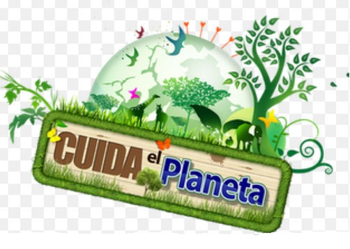

LA CONTAMINACION

App3

La contaminación es la introducción de sustancias en un medio que provocan que este sea inseguro o no apto para su uso. El medio puede ser un ecosistema, un medio físico o un ser vivo. El contaminante puede ser una sustancia química, energía (como sonido, calor, luz o radiactividad). Es siempre una alteración negativa del estado natural del medio, y por lo general, se genera como consecuencia de la actividad humana considerándose una forma de impacto ambiental.
2 millones de personas podrían morir cada año por alguna causa atribuible a la contaminación atmosférica, asegura la Organización Mundial de la Salud. Según este estudio la mayor cantidad de muertes se producen en los países en desarrollo donde se concentran altas densidades de partículas nocivas para la salud. La población humana crece según una progresión geométrica y la demanda de alimentos y necesidades básicas para la vida del hombre son cada vez mayores. El aumento en el consumo de diversos productos y desechos, provocados por el ser humano, trae como consecuencia la generación de sustancias tóxicas. Los grupos más vulnerables frente a la contaminación son: niños, mujeres embarazadas, personas con afecciones respiratorias y ancianos con enfermedades crónicas. Otro sector de la población con un alto riesgo de padecer los efectos causados por la contaminación atmosférica son los que trabajan al exterior o en lugares donde se está más expuesto a emisiones de contaminantes, como calles llenas de tráfico vehicular o determinadas industrias.
Este desarrollo indiscriminado ha alterado la Tierra:Regiones enteras en zonas tropicales han sufrido la desertificación.
Extinción de especies animales y vegetales.
Graves inundaciones que arruinan cada año las cosechas de las zonas más pobres del planeta.

CONTAMINACIÓN DEL SUELO
El suelo es un constituyente normal de la Naturaleza, con componentes minerales y orgánicos y con componentes biológicos constituidos por organismos que viven en él.
La contaminación del suelo: es la incorporación al suelo de materias extrañas, como basura, desechos tóxicos, productos químicos, y desechos industriales, este tipo de contaminación produce un desequilibrio físico, químico y biológico que afecta negativamente las plantas, animales y humanos.
El uso de abonos, la sedimentación de contaminantes atmosféricos de origen industrial, los vertidos industriales y los depósitos y escombreras producen alteraciones en los suelos difícilmente cuantificables, sobre las que es problemática la previsión de efectos.
CONTAMINACION DEL AIRE
El aire limpio está compuesto principalmente por nitrógeno y oxígeno, en pequeñas proporciones se puede encontrar vapor de agua y dióxido de carbono. La contaminación del aire, proviene de la adición de sustancias emitidas a la atmósfera que causan un desequilibrio en la composición original. El aire contaminado contiene gases, polvos, olores y humos en grandes cantidades que dañan la salud de las personas, animales y plantas. Existen dos tipos de contaminantes:
Los que son arrojados directamente a la atmósfera como resultado de un proceso de combustión se llaman contaminantes primarios, estos son: dióxido de azufre, monóxido de carbono, vapores de combustibles y partículas suspendidas.
Una vez en el aire, algunos contaminantes primarios reaccionan con otros compuestos y forman contaminantes de igual o mayor toxicidad, estos se denominan contaminantes secundarios.
La contaminación daña de diferente manera la salud de los individuos dependiendo de su nivel de exposición a los contaminantes, de su capacidad y de su resistencia física.
- Una de rechazo a través de tos o estornudos.
- A través de la presencia de diversos síntomas o de enfermedades específicas.
CONTAMINACIÓN DEL AGUA.
La contaminación del agua se produce a través de la introducción directa o indirecta en los acuíferos o cauces de agua de diversas sustancias que pueden ser consideradas como contaminantes.
Se pueden definir tres tipos de contaminación del agua:En el ambiente laboral e industrial el agua contaminada puede producir daños de salud a los trabajadores, las vías de penetración del agua contaminada en el ser humano.
La contaminación en mi comunidad de San Felix Hidalgo situada en el municipio de atlixco , lamentablemente sufre un poco de contaminacion a causa de tirar basura en los lugares públicos, quemar basura al aire libre, los desechos tóxicos, entre otras cosas que afecta a nuestra salud.
Contaminación de la basura: podemos barrer todo los dias las calles para que ya no se vean tan sucias o poner botes de basura en cada cuadra para que asi disminuya la contaminacion.
Contaminación del agua: para dejar de contaminar el agua, que en este caso sucede en el rio que esta cerca de los terrenos de siembra podemos poner una cerca para que las personas sin conciencia dejen de ir a contaminar un recurso natural indispensable para la vida.
Contaminación del aire: reducir la contaminacion del aire puede ser tan facil, una de las diferentes maneras es utilizar la bicicleta en vez del transporte publico o el automovil asi podemos disminuir el aumento del CO2.En vez de quemar las llantas de los automoviles podemos reciclarlas en casa como masetas o en alguna otra cosa , siempre y cuando no afecte al medio ambiente.
Iluminación: podemos utilizar focos ahorradores o lamparas solares para disminuir el consumo de electricidad en casa o de alguna manera utilizar velas como se acostumbraba en la antiguedad.
Contaminación del agua: cuando se incorpora al agua a productos químicos, residuos industriales o aguas residuales. Estos contaminantes hacen que el agua no sea beneficiosa para el ser humano ni para la vida vegetal y animal.
Contaminación del aire:la mayoria de la gente quema basura y eso hace que se incremente la prencia de el CO. Este tipo de contaminación afecta al bienestar de las personas, animales y plantas de forma negativa.
Contaminación del suelo: esto es producido por la mayoria de la personas que no barren las calles o cuando los cmpesinos introducen fertilizantes en los terrenos e cultivo. Estos fertilizantes producen una contaminacion dañina en el suelo lo cual nosotros mismos lo estamos provocando.
Usar el transporte público: Solo en la mayoría de los trayectos urbanos, como llevar a los niños a la escuela o puedes optar por comprarte un coche eléctrico o usar la bicicleta.
Apagar la luz: Las habitaciones que no se estén utilizan deberían permanecer a oscuras. Esto permite ahorrarnos dinero y reducir nuestra huella de carbono.
Reciclar: El reciclaje es una de las maneras más fáciles de combatir el Calentamiento Global, ya que evitamos generar mayor contaminación. Por culpa del plástico estamos creadas verdaderas islas de basura en los océanos. Por lo tanto es aconsejable adquirir el hábito de separar el plástico, el metal, el vidrio, el papel, y las pilas.
El Termostato: El consumo energético disminuye hasta un 5% si bajamos un sólo grado el termostato de la calefacción ajusta la calefacción a una temperatura razonable.
Plantar árboles en su jardín y la comunidad: Todo el mundo sabe que la plantación de árboles puede ayudar al medio ambiente. Los árboles enfrían tu casa, lo que reduce la energía utilizada para la refrigeración. Los árboles mejoran la salud mental, etc.